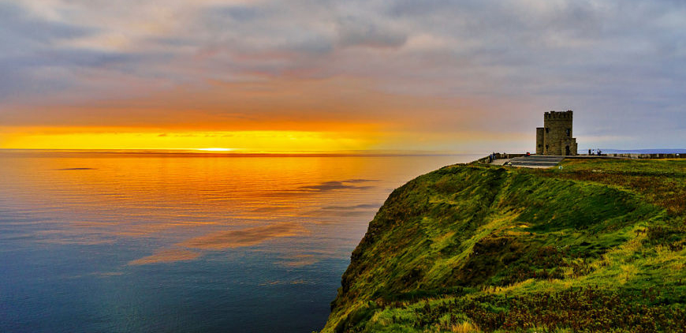
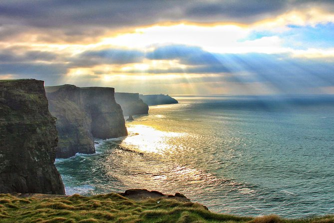
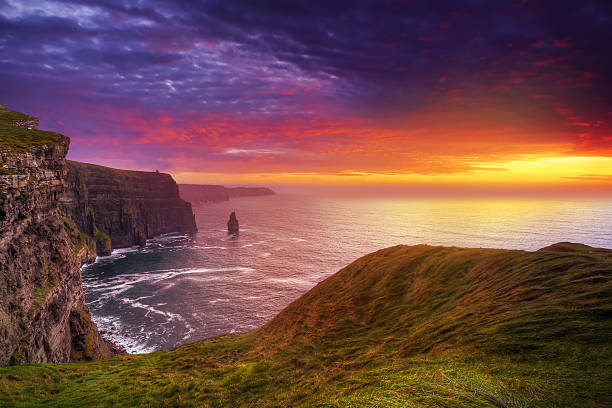

one of Ireland’s favourite visitor experiences, the Cliffs of
Moher tower over the rugged west Clare coast. Walk the safe, paved pathways and view the famous Cliffs on
Europe’s western frontier and enjoy the spectacular vistas over the Atlantic Ocean and the Aran Islands.
Their natural beauty has inspired artists, musicians, and poets for generations, as well as absorbing
scientists and geologists, drawn by the unique landscape in which they sit. The Cliffs of Moher, the most
famous cliffs in Ireland, will leave you awestruck, creating memories that will stay with you forever. The
Cliffs of Moher host major colonies of nesting sea birds and are one of the country’s most important
bird-breeding sites. The area has been designated a Special Protection Area (SPA) for Birds.From the
beautiful south out to Hag’s Head – The Main Platform
From this main viewing area, you can see the south cliffs and also look out towards the mighty Hag’s Head.
Sheer splendour!
From beautiful bay to peaceful isles – The North Platform
Located near the highest point of the Cliffs, Knockardakin stands at 214m or 700 feet above sea level – this
platform is also located close to O’Brien’s Tower and from here you have marvelous views, north, south, east
and west from an elevated point.
From a bird paradise to mighty sea stack – The South Platform
From the South Platform, you’re perfectly placed to see the puffin colony that makes its home on Goat
Island. You may also see many other seabirds as well as the sea stack below O’Brien’s Tower. From here, you
can walk 4km to Hags Head and its own incredible views of the Cliffs.

The Cliffs
One of Ireland’s favourite visitor experiences & tourist attractions, the Cliffs of Moher tower over the
rugged West County Clare coast.
Visually spectacular, the Cliffs of Moher sit astride the striking landscape of the Burren on one side and
the Wild Atlantic Ocean on the other. Rising out of the Atlantic waters to a height of over 700ft at
O’Brien’s Tower and running along the coast of Clare for almost 14 kilometres, or 8 miles, the Cliffs of
Moher were formed over 320 million years ago, and today form part of the Burren and Cliffs of Moher UNESCO
Global Geopark. The Cliffs of Moher is in a Special Protection Area for Birds and Wildlife. The magnificent
Cliffs on the Wild Atlantic Way host major colonies of nesting sea birds and are one of the country’s most
important bird-breeding sites. Borrow some binoculars from our information desk and do some bird watching.
Enjoy the captivating spectacle of the vast array of sea birds, a delightful way to pass the hours.